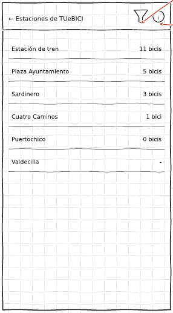
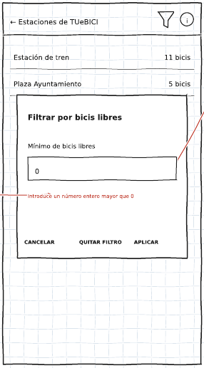
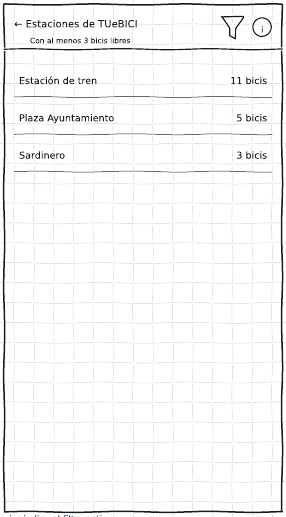
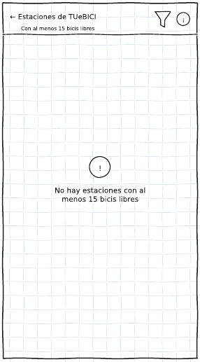

Historia de usuario US532376. Permite ver solo las estaciones que tienen al menos un número de bicis libres, para no ir a una estación que se haya quedado vacía.
En la pantalla principal, pulsa la red que te interese (por ejemplo, TUeBICI). Se abre la lista de sus estaciones, ordenadas de más a menos bicis libres. Las estaciones que no informan de sus bicis muestran un guion (-).


Si escribes un valor no válido (vacío o 0), aparece el aviso "Introduce un número entero mayor que 0" y la lista no cambia. Pulsa Cancelar para cerrar el diálogo sin filtrar.
La lista muestra solo las estaciones con ese número de bicis libres o más, y la barra superior indica el filtro activo, por ejemplo "Con al menos 3 bicis libres". Debajo del nombre de la red se indica cuántas estaciones se muestran.

Con el filtro activo no se muestran las estaciones que no informan de sus bicis, porque no se puede asegurar que tengan bicis disponibles.
Si ninguna estación tiene tantas bicis libres, en lugar de la lista aparece el mensaje "No hay estaciones con al menos N bicis libres". Prueba con un número más bajo.

Vuelve a pulsar el embudo y pulsa Quitar filtro: se muestran otra vez todas las estaciones de la red.
Desde la lista de estaciones, el icono de información (i) de la barra superior abre la información detallada de la red (empresas, bicis eléctricas, coordenadas...).